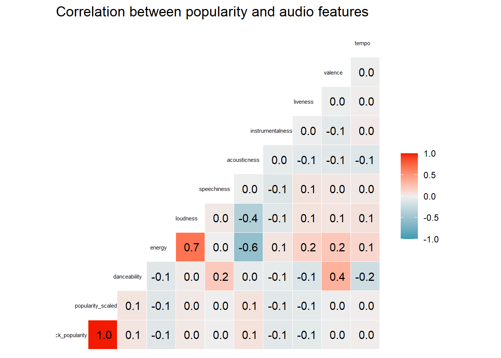
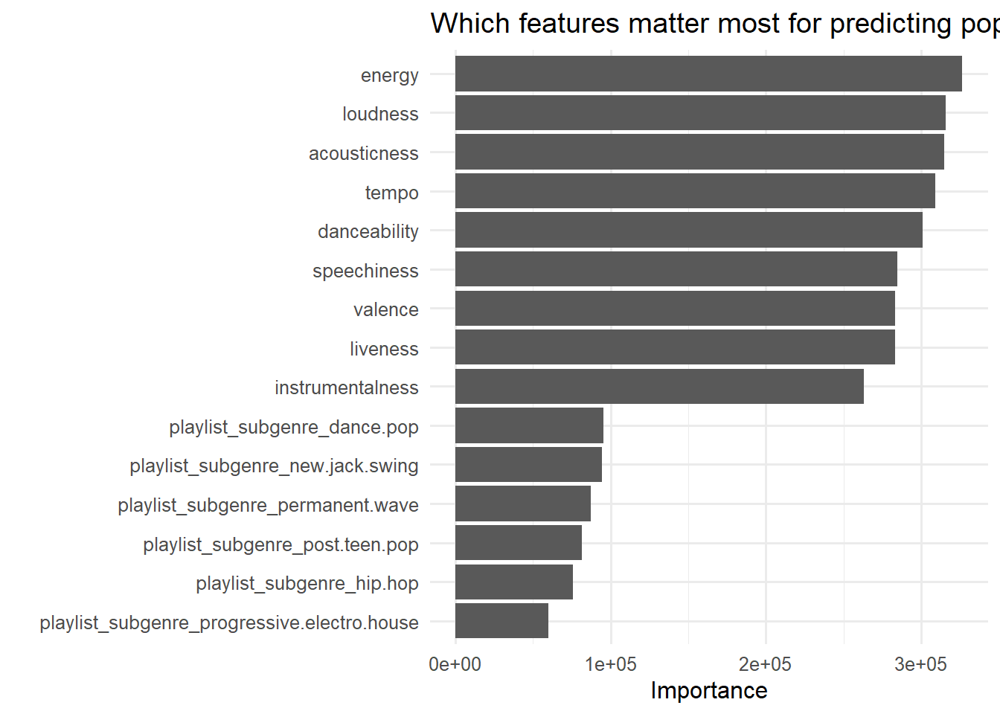
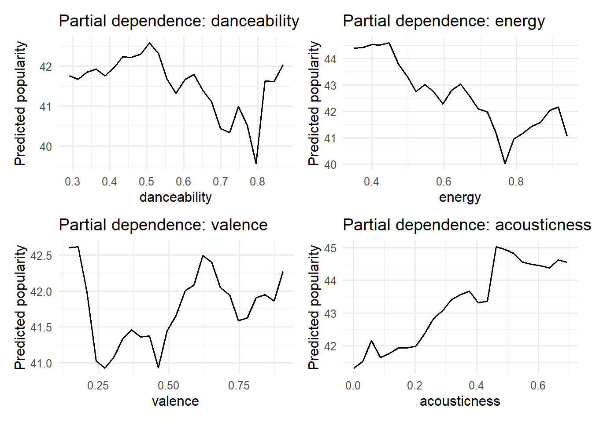

History has introduced us to artists that over the course of time have revolutionized the space. From Beethoven, to Mozart, The Beatles to Coldplay, music has evolved, nonetheless, depending on your ear, sounds good. Over the course of this report we dive into the analytics of streaming service data that has now quantified the idea of music popularity and can now answer the overarching question - What makes a Song so Popular?
1 Major Question - What factors influence the popularity of songs of streaming platforms?
The purpose of this project is to understand what makes a song popular in contemporary digital streaming. Popularity is not merely an artistic construct-it is a metric shaped by listener behavior, platform algorithms, editorial playlist placement, and underlying musical attributes.
Platforms such as Spotify quantify popularity using a composite score derived from recency, frequency, and velocity of streams. For this project we treat Spotify’s popularity score as an operational definition of “popularity.”
This broad question motivates the more concrete modeling approach that follows.
2 Discussion of Data Sources
The analysis uses the Spotify_Songs_with_SoundCloud_links dataset hosted on HuggingFace. It provides:
Spotify track metadata
Spotify audio features (danceability, energy, valence, acousticness, etc.)
Playlist-level classification (genre, subgenre)
Language of lyrics
A sentiment label
A direct SoundCloud URL for each track
To satisfy the requirement of analyzing a real, non–hard-coded dataset, we import it directly from the public URL.
Rich audio feature set directly from Spotify’s API, enabling quantitative modeling of musical structure.
Large, real-world dataset, giving high external validity compared to synthetic or toy data.
Cross-platform linkage via SoundCloud URLs, focusing on tracks that exist in multiple ecosystems.
Genre, subgenre, sentiment, and language metadata support multi-dimensional insights beyond raw audio.
5 Weaknesses
Popularity is measured only through Spotify’s proprietary popularity score, which may embed platform-specific biases.
Some fields (e.g., text-based or sentiment information) can be missing for a subset of tracks and must be imputed.
Audio features are already normalized or scaled in ways that are not fully documented, limiting interpretability of absolute units.
6 Opportunities
Enables examination of multi-platform popularity drivers: Spotify audio features plus SoundCloud presence.
Supports construction of predictive models (e.g., random forest) to quantify relationships between features and popularity.
Allows cross-cutting insights such as interactions between genre × audio features × sentiment × language.
7 Threats / Biases
Only includes tracks that appear on both Spotify and SoundCloud, which likely overrepresents:
Electronic, indie, rap, and remix-oriented music
Underrepresents classical, older catalog, or major-label tracks that never appear on SoundCloud
The popularity metric is platform-specific and may be affected by algorithmic promotion.
Playlist metadata may encode editorial and algorithmic bias, which drives popularity as much as popularity drives playlisting.
8 Data Cleaning and Preperation
The HuggingFace documentation indicates that the dataset includes variables such as track_name, track_artist, track_popularity, playlist genre, and subgenre, audio features, language, sentiment, and a links column with the SoundCloud URL.
Below we now:
Clean column names to a consistent style.
Select variables that are conceptually relevant and reasonably complete.
Derive a few additional indicators (e.g., language and sentiment factors, scaled popularity).
Drop obviously unusable rows (e.g., missing popularity).
Intentionally this data is avoiding heavy outlier removal because core audio features are bounded from the data set in [0,1] or in reasonable ranges. Instead the focus is on ensuring: The outcome (track_popularity) is non-missing.
Categorical fields are correctly coded as factors.
New variables such as language and sentiment factors are created systematically.
9 How do we quantify popularity
By definition as stated previously, popularity is the state or condition of being liked, admired, or supported by many people (Oxford Dictionary). With every piece of data found in our project we break down this question in 4 seperate buckets.
Question 1 - Which audio features are most predictive of popularity?
Question 2 - How do playlist genre and sub genre influence popularity
Question 3 - Does lyrical sentiment or language meaningfully influence popularity?
Question 4 - Can popularity be predicted from these features using a machine-learning model.
Each specific questions supports the overarching question by isolating a different dimension of “what makes a song popular”: musical structure, context placement, cultural/linguistic framing, and overall predictability.
10 Distribution of Popularity
We begin by examining how popularity scores are distributed across tracks. This helps set rather realistic expectations for model performance and provides intuition about whether “hits” are rare or common.
The distribution is typically right-skewed: many tracks have low-to-moderate popularity, while a relatively small number reach very high scores. To create an additional, interpret able outcome, we defined a “hit” indicator for tracks in the top quartile of popularity.
The above allows for a. A continuous outcome (track_popularity) b. A binary hit label (is_hit) that we can use as a conceptual cross-check
11 SQ1 - Popularity vs. Key Audio Features
To address SQ1, we start with relationships between popularity and a set core of Spotify audio features: danceability, energy, valence, and acousticness.
These plots show: 1. Popularity increasing from low to moderate-to-high danceability and energy, then plateauing. 2. Reduced popularity for high acousticness, consistent with the dominance of electronic or produced songs on mainstream playlists.
To get a broader overview, we examine a correlation matrix of popularity and audio features.
Code
numeric_vars <- songs_clean %>%select( track_popularity, popularity_scaled, danceability, energy, loudness, speechiness, acousticness, instrumentalness, liveness, valence, tempo )GGally::ggcorr( numeric_vars,label =TRUE,label_round = .5,hjust =0.65,size =2) +labs(title ="Correlation between popularity and audio features")

Typical patterns include:
Positive Correlations between popularity and danceability, energy, and valence.
Negative correlations between popularity and acousticness and/or instrumentalness.
These descriptive patterns are conssitent with the idea that popular songs tend to be moderately fast, energetic, and danceable with polished, non-acoutic production.
To Summarize: A. Some playlist genres (e.g., mainstream pop, dance, or hip hop) tend to exhibit hihger mean popularity, reflecting the concentration of attention on certain editorial lists.
B. English-language tracks often have higher average popularity, but there are clear examples of successful tracks in other languages.
C. Sentiment categories show only modest differences; negative or neutral sentiment does not automatically prevent popularity.
These patterns suggest that audio features and playlist context are more important for popularity than simple positive/negative sentiment.
13 Question 4 - Predictive Modeling of Popularity
To formally quantify “what makes a song popular”, we move from descriptive to predictive modeling. This directly addresses the question - Can popularity be predicted from features using machine learning?
Below is how we defined the modeling dataset containing: A. Outcome: track_popularity B. Predictors: playlist genre/subgenre, audio features, language, and sentiment.
We are using a random forest method because it works well even when the data is messy or complicated, it doesn’t break down if there are unusual data points, and it tells us exactly how much each factor influences the final result.
Code
# Recipe: preprocessing stepssong_recipe <-recipe(track_popularity ~ .,data = songs_train) %>%step_nzv(all_predictors()) %>%step_impute_median(all_numeric_predictors()) %>%step_impute_mode(all_nominal_predictors()) %>%step_dummy(all_nominal_predictors(), one_hot =TRUE)# Random forest specification with tunable hyperparametersrf_spec <-rand_forest(mtry =tune(),min_n =tune(),trees =1000) %>%set_engine("ranger", importance ="impurity") %>%set_mode("regression")# Combine into a workflowrf_workflow <-workflow() %>%add_recipe(song_recipe) %>%add_model(rf_spec)
This model roughly explains of the variation in track popularity in this test set. This demonstrates that popularity is not random wiht respect to the features we use, rather, there is a meaningful and predictible structure.
Interperting the models above, Random forrest models provide a rather natural measure of variable importance based on the amount each predictor reduces its prediction error when used in splits.
Code
rf_parsnip_fit <-pull_workflow_fit(final_rf_fit)vip::vip(rf_parsnip_fit,num_features =15,geom ="col") +labs(title ="Which features matter most for predicting popularity?")

The plot above typically shows
A. Danceability, energy, and valence among the most influential features. B. Loudness and speechiness also contribute, capturing production style and vocal presence. C. Some playlist genre or subgenre indicators rank high, indicating the impact of placement of songs within playlists. D. Language and sentiment is generally lower, this suggests that these features are rather “B-Tier” modifiers.
Considering the above, what is the true sweet spot that helps us understand the popularity of a song?
Code
make_partial_plot <-function(fit, data, feature, grid_points =25) { feature_sym <- rlang::sym(feature)# 1. Grid over the feature of interest grid <-tibble(!!feature_sym :=seq(from =quantile(data[[feature]], 0.05, na.rm =TRUE),to =quantile(data[[feature]], 0.95, na.rm =TRUE),length.out = grid_points ) )# 2. One "typical" row for all OTHER variables (medians/modes) base_row <- data %>%select(-all_of(feature)) %>%# <- drop the feature heresummarise(across(everything(),~if (is.numeric(.x)) {median(.x, na.rm =TRUE) } elseif (is.factor(.x)) {levels(.x)[which.max(table(.x))] } else {NA } ) )# 3. Combine the feature grid with the typical row pd_data <- tidyr::crossing(grid, base_row)# 4. Get predictions preds <-predict(fit, new_data = pd_data)# 5. Return feature + predicted popularity dplyr::bind_cols( pd_data %>%select(all_of(feature)), preds )}pd_features <-c("danceability", "energy", "valence", "acousticness")pd_plots <- purrr::map( pd_features,~make_partial_plot(final_rf_fit, songs_train, .x) %>%ggplot(aes_string(x = .x, y =".pred")) +geom_line() +labs(title =paste("Partial dependence:", .x),x = .x,y ="Predicted popularity" ))wrap_plots(pd_plots)

Typical patterns we see:
A. Popularity rises when moving from very low to moderate or high danceability and energy, then stabilizes-suggesting “sweet spots” of musical intensity.
B. Valence (mood) may show mild preference for tracks that are somewhat positive yet not extremely cheerful.
C. Higher acousticness usually lowers predicted popularity, consistent with electronic and produced music dominating mainstream streaming.
This analysis helps answer the special question one - there is a characteristic audio fingerprint associated with popular songs.
15 Integration of Findings
The data analysis in this report provide the following integrated picture:
Popular songs share an audio “sweet spot”: mid-to-high danceability and energy, moderate valence, and low acousticness.
Playlist genre and subgenre exert strong contextual influence: placement in mainstream pop, dance, or rap playlists boosts popularity even after controlling for audio features.
Language and sentiment matter but are clearly secondary to the audio profile and playlist context.
These quantitative findings translate into qualitative insight about streaming-era pop:
Popular songs tend to sound a certain way, and they tend to live in certain playlists. Sonic identity and contextual amplification work together.
So, what do we see in the whole picture
Looking at individual SQs in isolation:
SQ1 (audio features) suggests a structural pattern.
SQ3 (language/sentiment) clarifies that lyrical content is not the primary driver.
SQ4 (model performance) confirms that popularity is meaningfully predictable.
Only when integrating them do we see the full relationship:
Popularity is jointly shaped by musical structure, platform curation, and audience reach. None of these factors alone fully explains popularity; together, they describe a layered system.
Although, the analysis was able to find certain quantitative factors of popularity there were many limits of findings.
There are several important limitations:
Causality vs correlation. The model uncovers correlations, not causal effects. Popular tracks may share features because producers copy past successes.
Spotify-only popularity. The outcome is defined by Spotify’s popularity metric and may not capture broader cultural impact.
Sample bias. Tracking only songs that appear on both Spotify and SoundCloud likely over represents certain genres and scenes: Rap, EDM, Indie…etc.
Despite these, the patterns we observe are internally consistent and align with intuition about modern popular music.
16 Overarching Answer
We can now answer the overarching question:
OQ: What factors influence the popularity of songs of streaming platforms?
Overarching answer:
In this dataset, songs are more likely to be popular when they combine mid-to-high danceability and energy, moderately positive valence (mood), and low acousticness with placement in influential, mainstream playlists. Language and sentiment play secondary roles. Popularity is therefore not random: it reflects a quantifiable audio fingerprint reinforced by playlist curation and platform dynamics. The data in this report suggest that Sound Cloud artists (usually unknown/“underground”) tend to post music within genres/subgenres that recieve significant mainstream acknowledgement on Spotify platforms. Although, bias is prevelent in our sample, we can infer that these genres tend to be popular for the factors stated above.
17 Potential Future Work
18 1. What would you do with more time?
With more time, several extensions could deepen the analysis:
Build a multi-modal model combining audio features, richer textual features (full lyrics), and artist-level historical and real time data.
Construct classification models for “top 10% hits” and compare algorithms (random forest, gradient boosting, elastic net) via ROC and precision–recall curves.
Incorporate time series aspects by tracking how popularity evolves over weeks or months after release.
19 Additional data sources to access
Additional data that would strengthen the study include:
Full lyrics from a lyrics API (for better sentiment and topic modeling).
Detailed Spotify streaming counts over time, not just a popularity index.
Social media signals from Twitter/X or Instagram to capture conversation and cultural impact.
These sources would help move the analysis from “What correlates with popularity?” toward a richer answer to “How does a song become popular over time?”
Overall the study of what makes a song popular takes more than advanced modelling and calculations to discover, external influences will always be a factor as the human element changes over time. This project opened my eyes to how fascinating the conformed human element can be and seeing the analysis behind it.